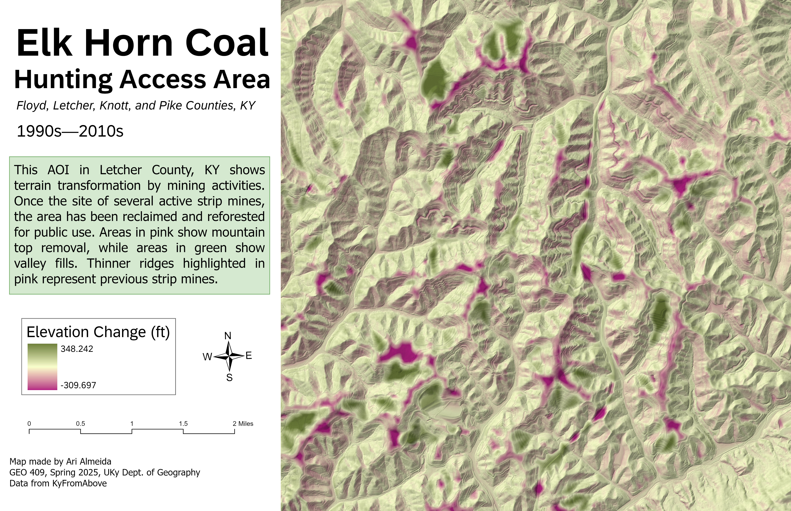
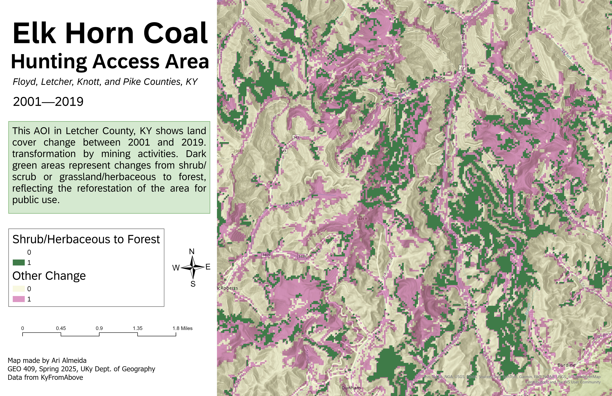

Lidar pointcloud of Elk Horn Coal Hunting Access Area in Eastern Kentucky.
A Story of Change in Three Maps
The Impact of Mining and Land Reclamation on Elk Horn Coal Hunting Access Area in Eastern Kentucky
Overview & History
The Elk Horn Coal Hunting Access Area spans over 20,000 acres across Floyd, Knott, Letcher, and Pike Counties in Eastern Kentucky. Once home to extensive strip mining and mountaintop removal across Appalachia, this land was reclaimed through a public-private partnership and opened for public hunting and recreation in 2018. Today, it is a mix of The property is comprised of reclaimed strip mine habitat of grasses and shrubs, with timbered ridges and drainages throughout. Strip mine habitat is of varying age and classification of reclamation. Officially still owned by a Elk Horn Coal, but managed by the Kentucky Department of Fish & Wildlife Resources for public use through hunting.
The goal of this project is to visualize the multiple changes in topography and land cover across the site using elevation models, NDVI, and land cover classification. The area may appear green today, but it was not always this way. These maps help reveal the scars of mining, the scale of valley fills and recontoured ridges, and the regrowth of vegetation in areas once stripped bare.
How does each map tell a story of change?
Shaded Relief with NDVI (2022) Map 1 combines a shaded relief base with NDVI data to show the current state of vegetation in the Elk Horn Coal Hunting Access Area. Darker greens indicate healthier vegetation, while lighter tones and gray patches highlight less vegetated or developed areas, such as roads and reclaimed mine benches. The mix of high and low NDVI values reflects a patchy landscape still recovering from decades of surface mining. The rugged terrain and vegetation gradients offer a snapshot of how the site looks today.
Elevation Change (1990s-2010s): Map 2 visualizes elevation change over roughly two decades, revealing how mining reshaped the land. Pink areas show where mountaintops were removed—flattened for coal extraction—while green areas represent valley fills where excess material was dumped. The clearest patterns of change trace the linear paths of former strip mines and fill benches. This topographic evidence helps us understand the physical legacy of mining across Eastern Kentucky’s ridgelines and hollows.
Land Cover Change (2001-2019): Map 3 is a land cover change map, which highlights areas that transitioned from shrubland or grassland to forest between 2001 and 2019. Dark green pixels show regrowth—evidence of either natural succession or reclamation planting on former mine sites. While not uniform across the landscape, this forest recovery is concentrated along slopes and access corridors, indicating selective regrowth in areas no longer disturbed. It demonstrates how the land, though still owned by Elk Horn Coal, is slowly rewilding for public use.
Visualizations created from lidar data provided by KyFromAbove in ArcGIS Pro and Blender. May, 2025.
Page and visualizations created by Ari Almeida for GEO 409, Department of Geography, University of Kentucky. Spring 2025.
Visualizations

Shaded relief of AOI in 2022, overlayed with NDVI to show vegetated areas.
Elevation change across the past three decades, showing both mountain top removal and strip mining areas. 
Land cover change in AOI from 2001-2019, showing the transition from shrubland to tree cover.